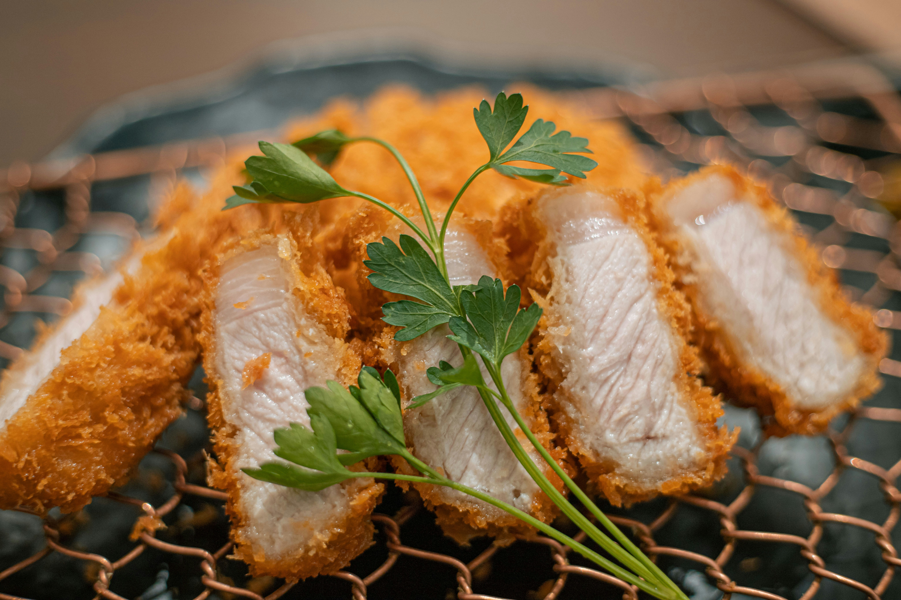

Chicken Katsu

Description
Chicken Katsu is a Japanese dish made from boneless chicken coated in flour, egg, and breadcrumbs,
then deep-fried until golden brown and crispy. It is commonly served with rice, fresh vegetables, and katsu sauce.
Ingredients
- 2 boneless chicken breasts
- ½ cup all-purpose flour
- 1 egg
- 1 cup breadcrumbs (preferably panko)
- ½ teaspoon salt
- ½ teaspoon black pepper
- Cooking oil for frying
- Katsu sauce for serving (optional)
- Steamed rice and vegetables for serving (optional)
Steps
- Prepare the chicken: Flatten the chicken breasts to an even thickness. Season both sides with salt and black pepper.
- Prepare the coating: Place the flour, beaten egg, and breadcrumbs in three separate bowls.
- Coat the chicken: Dip each chicken breast in flour, then egg, and finally breadcrumbs. Press gently to ensure the breadcrumbs stick.
- Heat the oil: Heat cooking oil in a frying pan over medium heat.
- Fry the chicken: Fry the chicken for approximately 4–6 minutes per side, depending on its thickness, until golden brown and fully cooked. The internal temperature should reach 74°C (165°F).
- Drain and slice: Remove the chicken and place it on a paper towel or wire rack to drain excess oil. Let it rest briefly, then slice into strips.
- Serve: Serve hot with steamed rice, vegetables, and katsu sauce.
Home